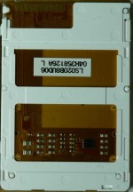
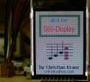

{kind=link}


With the simple test software you can write a string to the display either in 0 degree or in 90 degree mode. It it written mostly in C and shows how to use the display with your own graphic routines.
| LS020xxx | LPH88xxxx | L2F50xxx | |
|---|---|---|---|
|  | |
|
|
| Download | Download | Download |
For a more comfortable usage of the display the Nokia 6100 LCD Library written by Hagen Reddmann was adapted for the LS020-Display. The port is based on the assembler version v22. The library provides functions for
The port to the LS020-displays has currently one limitation. At the moment the LS020 display can only be used with GLCD in the 90 degree orientation. That is because GLCD writes bitmaps/fonts column for column in Y-direction. To support different display orientations the flexible memory addressing of the Philips controller in the Nokia 6100 display was used. Unfortunately the LS020 display controller seems not to support such flexible addressing modes. That means the drawing routines in the GLCD has to be adapted for the 0 degree orientation of the display. That might be a good task for a next release of the library.
At the moment the makefile for the test software in the library do not use recursive make. That means for compiling the test program you have first go to the glcd directory and do a make there. After that you can go into the test directory and do a make here for generating the target files.
 Download{kind=link}